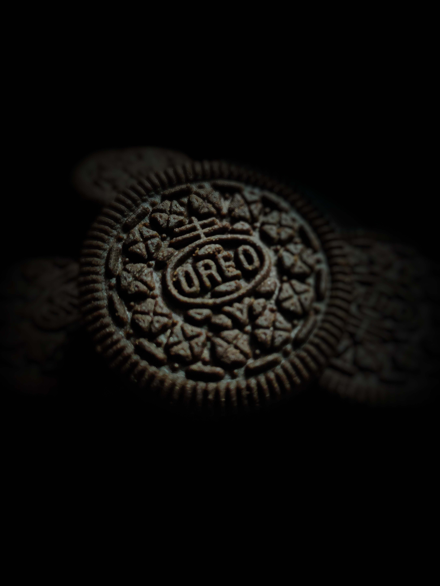
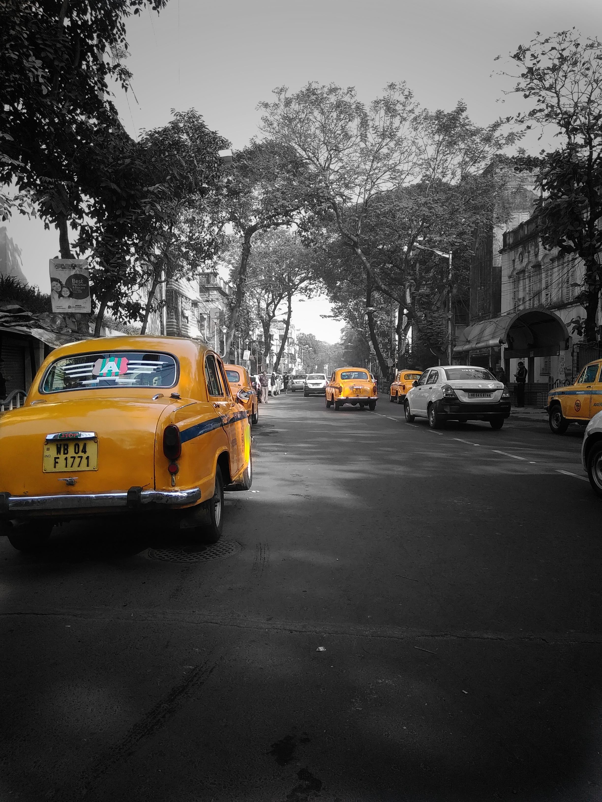
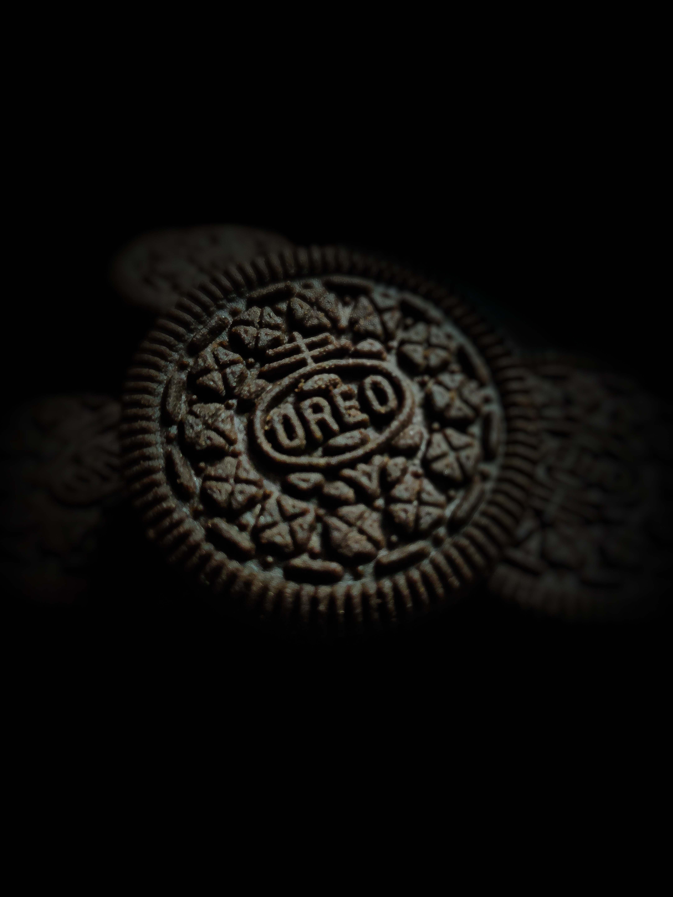
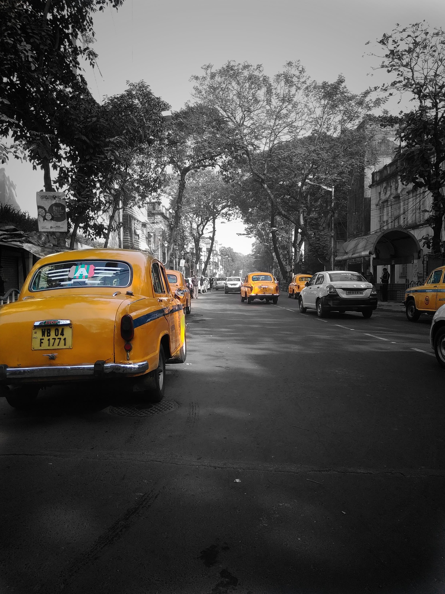

Live
My Story
Hey there everyone ! I am Pratik. Welcome to my world, I was born with a hip dislocation, which ceased my movement to explore this world around me with my limbs, but this could not put me away from grabbing my camera and dismantle my passion for capturing moments in a frame of my choice. I cannot move but I can capture !!
About Me
 


